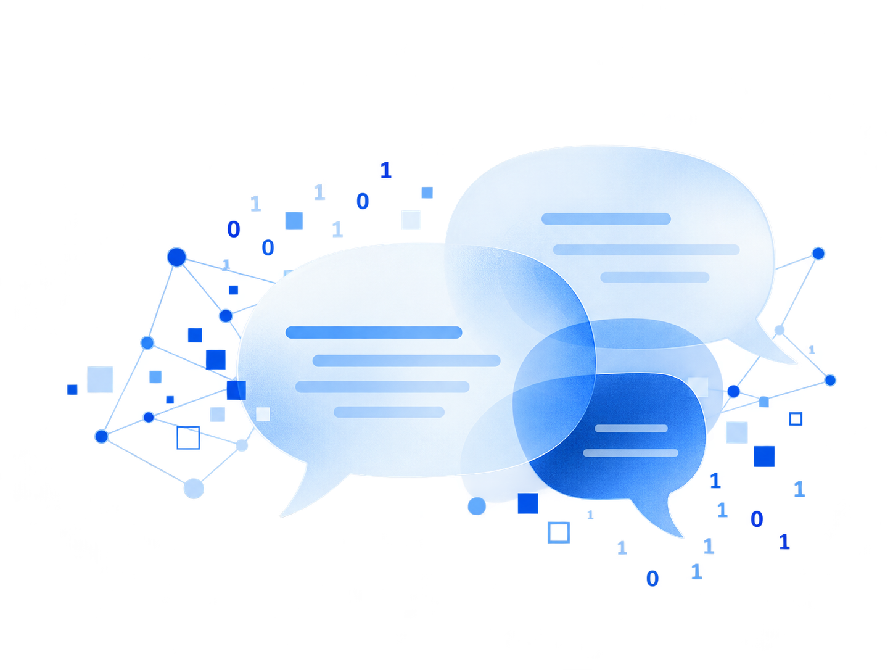
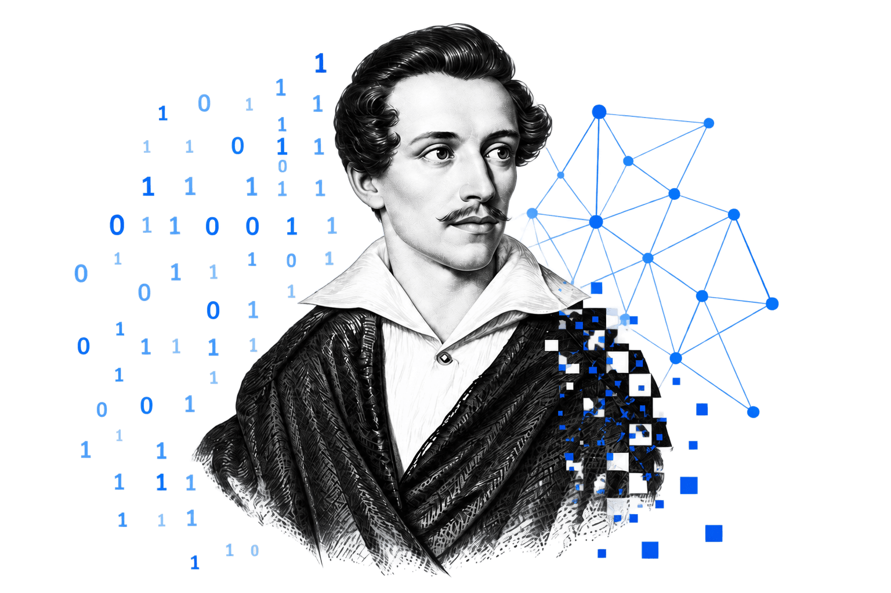
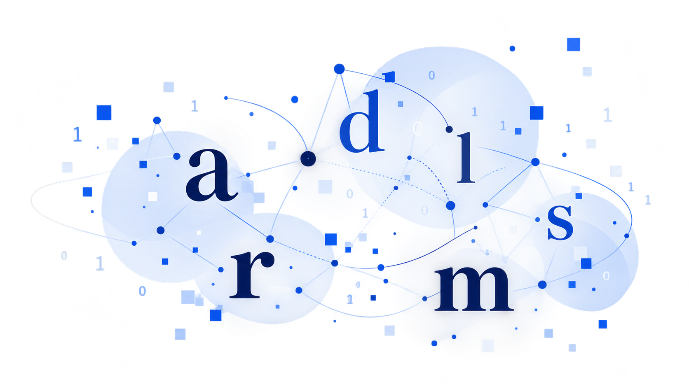
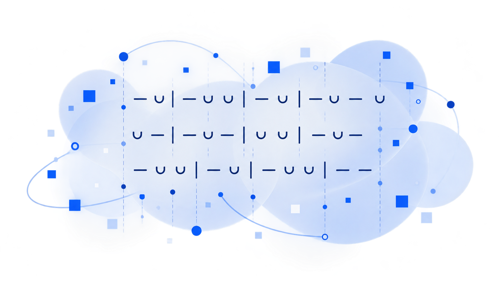
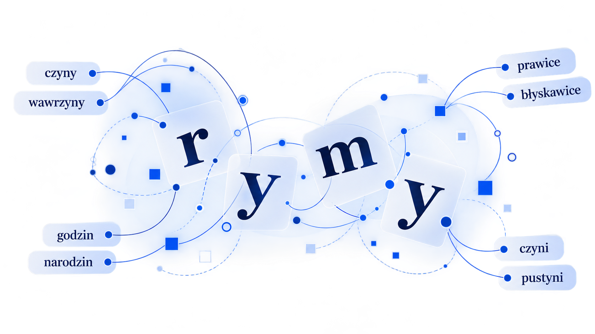

Teksty
Dane
Nowe perspektywy badań
Cyfrowa analiza literatury
Zestaw eksperymentalnych narzędzi do badania tekstów literackich metodami cyfrowymi.

Ślady słowa
Analiza „gier fonicznych” inspirowana hipotezą Ferdinanda de Saussure’a.

Analiza wersyfikacji
Narzędzie dydaktyczne do nauki wersologii (m.in. w trybie gry i symulacji kroków analizy metrycznej).

Słownik rymów
Wyszukuj rymy, analizuj brzmienia i odkrywaj fonetyczne powiązania.
◷ Wkrótce

O projekcie
Na tej stronie znajdziesz zestaw eksperymentalnych narzędzi do cyfrowej analizy literatury. Część z nich rozwija konkretne pomysły badawcze, część pełni funkcję dydaktyczną, a część stanowi próbę przełożenia metod wypracowanych przez literaturoznawstwo na procedury możliwe do wykonania komputerowo.
Projekt rozwijany na bieżąco
Projekt rośnie na bieżąco – istniejące moduły są rozbudowywane i udoskonalane; obok nich powstają
sukcesywnie także nowe narzędzia.
Zobacz na GitHub ↗︎